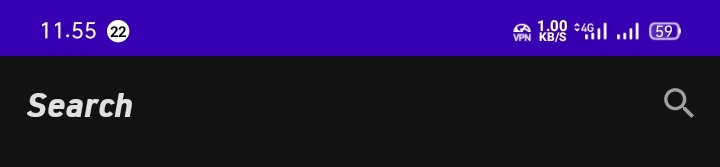
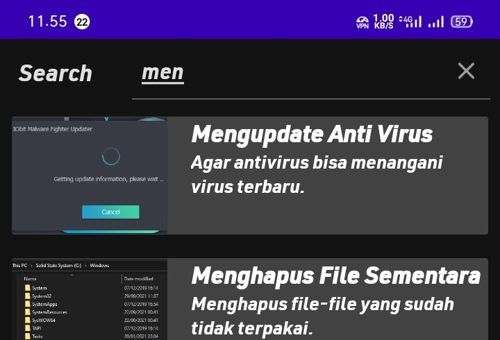
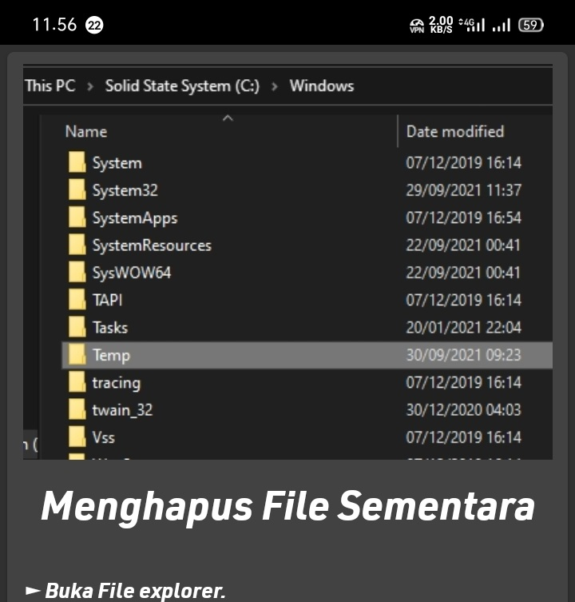

Mencari dengan kata kunci

Pertama, tekan ikon kaca pembesar yang berada pada bagian atas kanan layar.

Kemudian ketikkan kata kunci pada search bar. item akan langsung terurut sesuai kata kunci yang diketikkan.
Lalu tekan menu untuk membuka tutorial lengkapnya.

Halaman akan menampilkan tutorial sesuai item yang kita pilih tadi dengan penjelasan yang singkat dan mudah dipahami.